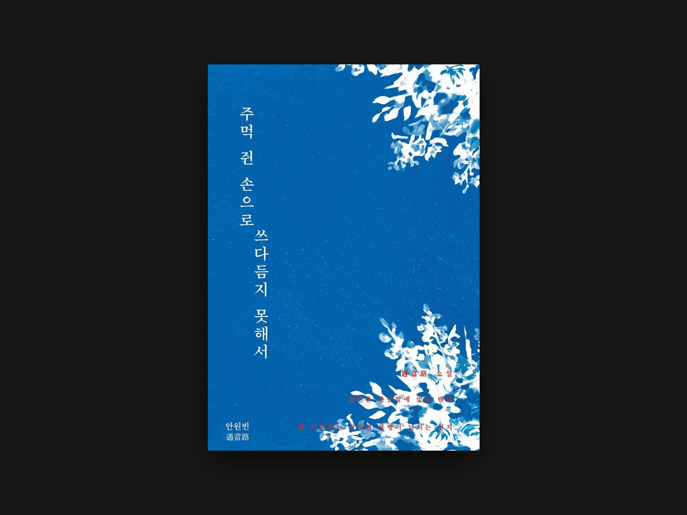
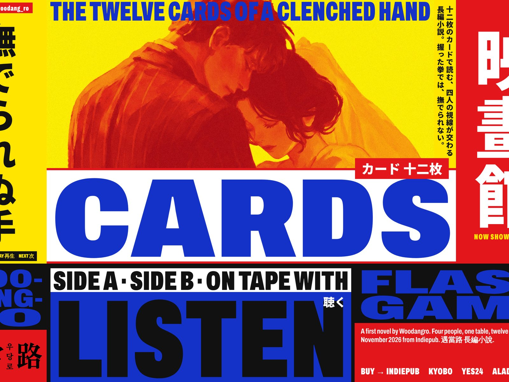
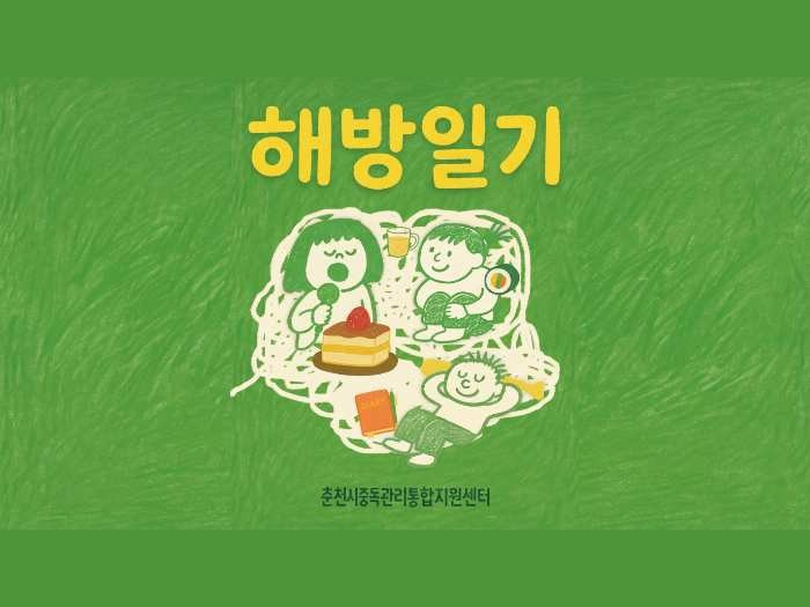
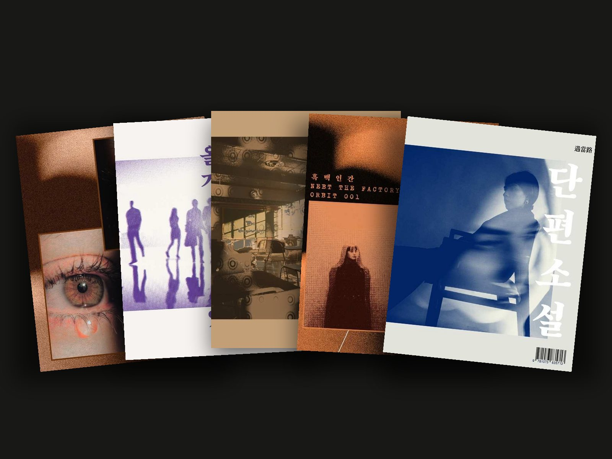
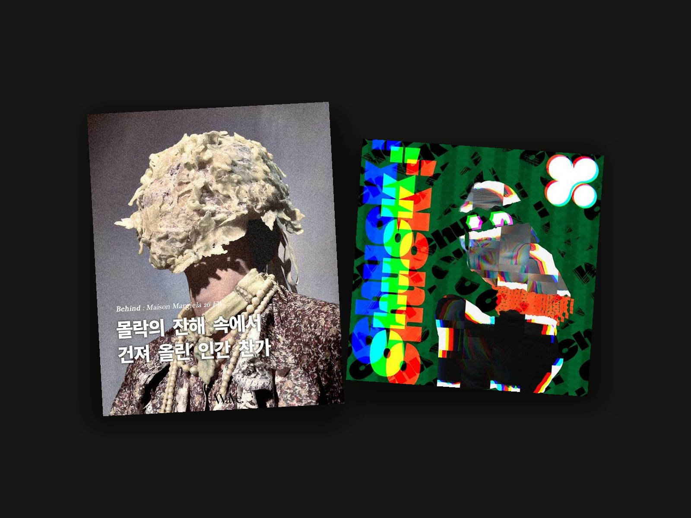

PORTFOLIO — 2026
「遇當路」
기록자 · 콘텐츠 에디터
관악, 서울
안원빈 · 우당로
감각을 번역합니다.
기획부터 집필, 촬영, 발행까지 혼자 완주해 본 사람입니다.
[ 작업 ]
05
01 — 책 발간
02 — 웹 디자인
03 — 인터뷰 · 영상
04 — 연재
05 — 그 밖의 작업
주먹 쥔 손으로 쓰다듬지 못해서
첫 소설. 글부터 표지·내지 디자인, 굿즈, 홍보 사이트와 영상까지 혼자 만든 책.
집필 + 출판 디자인 + 홍보

보기 [+]woodangro.kr
책을 위한 사이트. 포스터 한 장이 입구가 되고, 카드 · 영화관 · 카세트 · 게임 네 개의 방으로 이어진다.
기획 + 디자인 + 개발

보기 [+]해방일기
알코올 중독을 겪은 사람들의 이야기를 인터뷰로 담은 기록. 춘천시중독관리통합지원센터 협업, 8회.
기획 + 인터뷰 + 촬영 + 편집

보기 [+]인스타그램 연재
짧은 조각글을 직접 조판해 이미지로 올린 연재. 다섯 편, 41장.
글 + 조판

보기 [+]기타
금천 청년 아트크루 팝업작업실, 팟캐스트 ‘우당로의 기록’, 영상, 매거진, 앨범커버.
기획 + 운영 + 제작

보기 [+][ 태도 ]
시켜서 만든 것이 아니라 만들고 싶어서 만든 것들이 쌓였습니다. 연재와 팟캐스트, 인터뷰 영상, 그리고 첫 소설까지. 브랜드의 온도를 문장으로 옮기는 일이 제 직무라고 생각합니다.